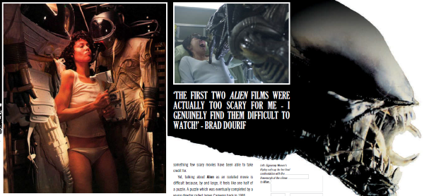

A series of themed media articles.
| Story Title | Parts | Pages | w indicates a wraparound coverCovers | Year(s) | Issues | Writer | Artist | Colourist | Letterer |
|---|---|---|---|---|---|---|---|---|---|
| Horror Movie Remakes | 1 | 7 | 0 | 2006 | M252 | Alec Worley | promo graphics | <-- | n/a |
| Contains Graphic Scenes | 1 | 7 | 0 | 2006 | M253 | Alec Worley | promo graphics | <-- | n/a |
| Watching the Detectives | 1 | 7 | 0 | 2007 | M255 | David Bishop | promo graphics | <-- | n/a |
| Torture Porn: Have Horror Movies Finally Crossed the Line? | 1 | 2 | 0 | 2007 | M261 | Alec Worley | promo graphics | <-- | n/a |
| The Vampire Bites Back | 1 | 2 | 0 | 2007 | M265 | Alec Worley | promo graphics | <-- | n/a |
| Edinburgh Film Festival: Sinema City | 1 | 3 | 0 | 2009 | M287 | Calum Waddell | promo graphics | <-- | n/a |
| Video Nasties: A History of Violence | 1 | 3 | 0 | 2009 | M289 | Calum Waddell | promo graphics | <-- | n/a |
| Alien: Long in the Tooth | 1 | 3 | 0 | 2009 | M289 | Calum Waddell | promo graphics | <-- | n/a |
| Sitges International Film Festival | 1 | 3 | 0 | 2010 | M293 | Calum Waddell | promo graphics | <-- | n/a |
| Italian Exploitation Cinema | 1 | 4 | 0 | 2010 | M297 | Calum Waddell | promo graphics | <-- | n/a |
| Predators: Predatory Behavior | 1 | 3 | 0 | 2010 | M300 | Joel Meadows | promo graphics | <-- | n/a |
| Flash Gordon: Gordon's Alive | 1 | 4 | 0 | 2010 | M301 | Calum Waddell | promo graphics | <-- | n/a |
| Superman: Krypton on Camera | 1 | 3 | 0 | 2013 | M337 | Calum Waddell | promo graphics | <-- | n/a |
| Robocop: Your Move, Creep | 1 | 4 | 0 | 2014 | M345 | Calum Waddell | promo graphics | <-- | n/a |
| Godzilla: King of the Monsters | 1 | 4 | 0 | 2014 | M347 | Calum Waddell | promo graphics | <-- | n/a |
| year | episodes | pages |
| 2000 | 0 | 0 |
| 2001 | 0 | 0 |
| 2002 | 0 | 0 |
| 2003 | 0 | 0 |
| 2004 | 0 | 0 |
| 2005 | 0 | 0 |
| 2006 | 2 | 14 |
| 2007 | 3 | 11 |
| 2008 | 0 | 0 |
| 2009 | 3 | 9 |
| 2010 | 4 | 14 |
| 2011 | 0 | 0 |
| 2012 | 0 | 0 |
| 2013 | 1 | 3 |
| 2014 | 2 | 8 |
| 2015 | 0 | 0 |
| 2016 | 0 | 0 |
| 2017 | 0 | 0 |
| 2018 | 0 | 0 |
| 2019 | 0 | 0 |
| 2020 | 0 | 0 |